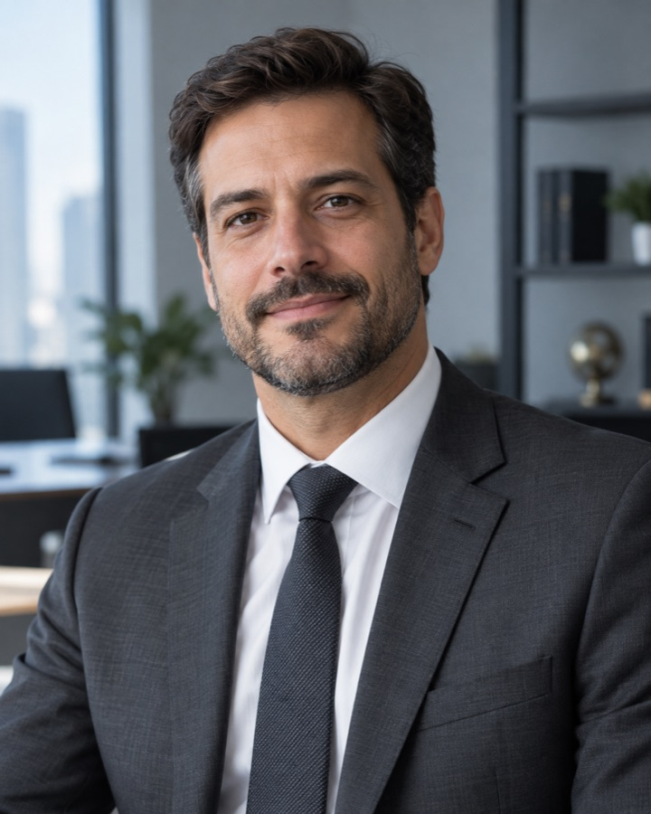

Desde 2010
Atividade profissional
EXECUÇÕES E RECUPERAÇÃO DE CRÉDITO
Defesa em execuções e cobrança de créditos para empresas e pessoas físicas. Uma atuação que conecta o direito à análise de contratos, cálculos e informações financeiras.
Fale sobre o seu casoGuaíba/RS · Justiças Estadual, Federal e do Trabalho
Atividade profissional
Formação que se complementa
Com o sócio titular
ÁREAS DE ATUAÇÃO
Atuação cível, bancária, fiscal e trabalhista, com atenção aos aspectos jurídicos e financeiros de cada demanda.
Atuação para empresas e pessoas físicas em execuções de títulos extrajudiciais, como cédulas de crédito bancário, duplicatas e contratos bancários.
Cobrança de créditos por meio de execuções, ações monitórias e cumprimentos de sentença, conforme as particularidades de cada caso.
Embargos à execução, embargos de terceiro e defesa do bem de família, com análise dos fundamentos da cobrança e dos bens atingidos.
Defesa em cobranças municipais, estaduais e federais, incluindo IPTU, ICMS, IPVA, ISS e dívida ativa da União.
Atuação em incidentes de desconsideração da personalidade jurídica, com exame dos requisitos para responsabilização patrimonial.
Cumprimento de sentença contra a Fazenda Pública, com acompanhamento dos procedimentos relacionados a precatórios e requisições de pequeno valor.
Análise de contas, liquidação de sentença e impugnação de cálculos judiciais, com o suporte da formação jurídica e contábil do sócio titular.
Representação de empregadores em reclamatórias e execuções trabalhistas, nas diferentes etapas do processo.
O ESCRITÓRIO
A Machado Corrêa Sociedade de Advogados tem sede em Guaíba/RS e atua nas Justiças Estadual, Federal e do Trabalho. A concentração em execuções, cumprimentos de sentença e recuperação de crédito se soma à atuação nas áreas de família, criminal e condominial.

OAB/RS 80.469 · CRC/RS 80.929
Advogado e contador pela PUCRS, Mestre em Ciências Contábeis pela UNISINOS e Especialista em Inteligência Artificial para Advogados pela EBPÓS.
Em atividade desde 2010, reúne formação jurídica e contábil para a análise de contratos, cálculos e demonstrações financeiras.
OAB/RS 136.226
Advogada, bacharel em Ciências Jurídicas e Sociais pela Universidade Federal do Rio Grande do Sul (UFRGS), com inscrição na OAB/RS.
Integra o escritório desde 2026. Seu ingresso como sócia marcou a formação plural da Machado Corrêa Sociedade de Advogados, em Guaíba.
ATENDIMENTO DIRETO PELO SÓCIO TITULAR
O atendimento começa pela sua situação e pelos documentos que ajudam a explicá-la.
Entre em contato pelo WhatsApp ou e-mail e informe o assunto que deseja tratar.
Contratos, informações do processo e demonstrativos ajudam a contextualizar a análise.
Converse sobre a atuação adequada ao caso e as condições de contratação.
DÚVIDAS FREQUENTES
Sim. O escritório atua na defesa de empresas e pessoas físicas em execuções de títulos extrajudiciais, como cédulas de crédito bancário, duplicatas e contratos bancários. A análise começa pela citação, pelos documentos da dívida e pelas informações do processo.
A atuação abrange execuções, ações monitórias e cumprimentos de sentença. O escritório examina os documentos que comprovam o crédito e as características da cobrança para definir a medida adequada ao caso.
Sim. A atuação inclui embargos à execução, embargos de terceiro e questões relacionadas à proteção do bem de família. O escritório analisa os bens envolvidos, os documentos e a situação processual para avaliar as medidas cabíveis.
Sim. O escritório atua em execuções fiscais municipais, estaduais e federais, incluindo cobranças de IPTU, ICMS, IPVA, ISS e dívida ativa da União. Para a análise, são examinados os documentos da cobrança e do processo.
Sim. O escritório atua em incidentes de desconsideração da personalidade jurídica, examinando os fundamentos do pedido, os documentos e a situação da empresa e dos sócios envolvidos.
Sim. A atuação inclui cumprimento de sentença contra a Fazenda Pública, com demandas relacionadas a precatórios e requisições de pequeno valor (RPV). A análise considera a decisão judicial e a fase em que o processo se encontra.
Sim. O escritório atua em liquidação de sentença e impugnação de cálculos judiciais. A formação jurídica e contábil do sócio titular contribui para o exame de contratos, demonstrativos e critérios utilizados nas contas.
Sim. A atuação trabalhista é voltada à defesa do empregador em reclamatórias e execuções. O atendimento considera os documentos da relação de trabalho, os pedidos apresentados e, quando houver, os cálculos do processo.
FALE COM O ESCRITÓRIO